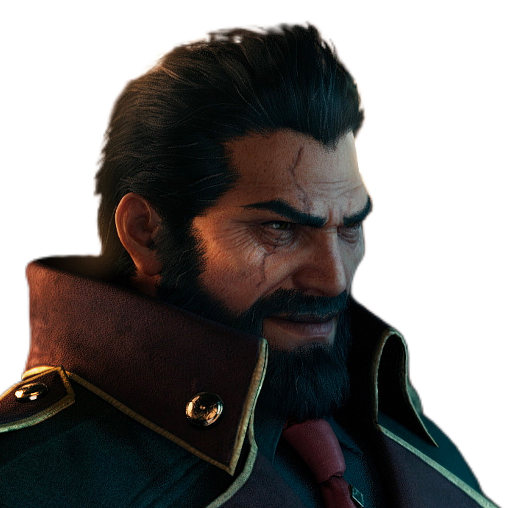
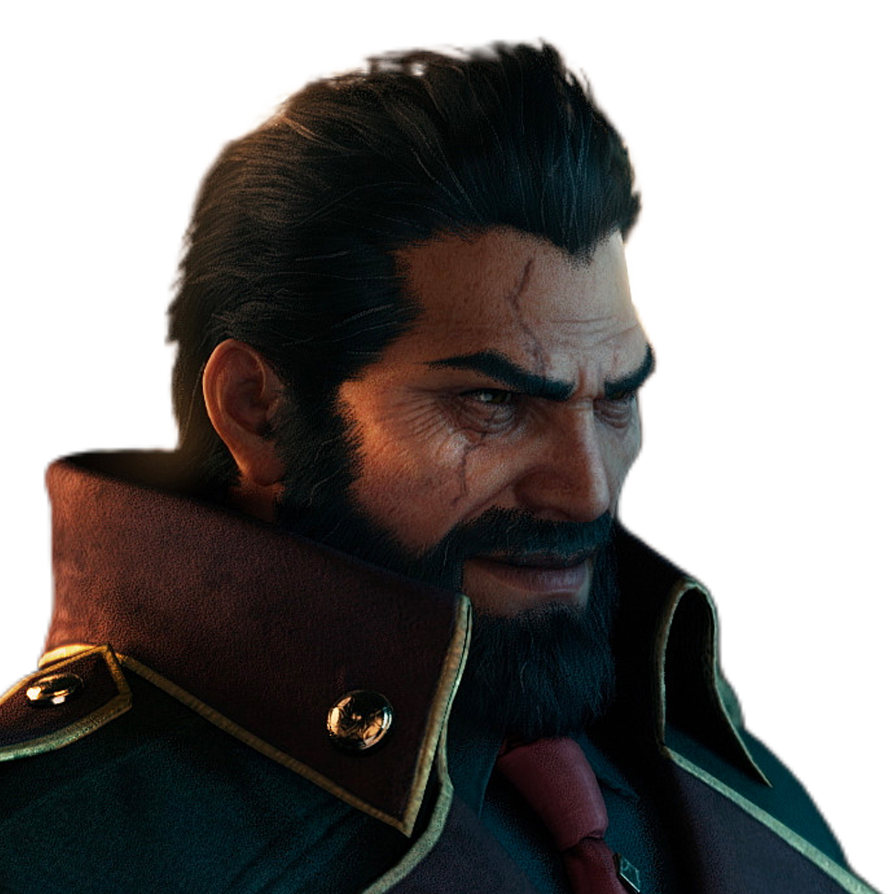

Cloud Strife
Cloud, um ex-SOLDIER de primeira classe, veio a Midgar para começar um novo capítulo de sua vida como mercenário. Por convite de Tifa, sua amiga de infância, ele aceitou um trabalho com Avalanche. Ele pode usar sua "buster sword" contra tropas da Shinra, mas não se importa com os problemas do planeta. Para ele, esse é só mais um trabalho e nada mais.